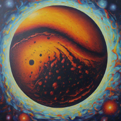

I’m motivated by a desire to give back to my family, who worked hard to provide me with opportunities they didn’t have.
Virgo Moon
In stressful situations, I either face it head-on, which can be emotionally draining, or step back to plan a less emotionally taxing approach.
Capricorn Rising
I'm told that I'm intimidating or look "mean" which is funny since I'm so unserious in social situations.
Scorpio Mercury
My communication style can be quite vulgar and blunt, I like it since it keeps me from feeling misinterpreted.
Scorpio Venus
I love physical touch, but hate PDA. It's the more subtle touch that makes me feel safe and works well for me.
Libra Mars
I tend to daydream and imagine my goals in terms of where I want to be and the things I would be doing once I'm there.
Leo Jupiter
Growth to me is making new decisions instead of the same ones I used to repeat over and over.
Gemini Saturn
Commitmemt and responsibility honestly are a bit boring. I do it as an obligation to my future self and like being reliable to the people I care about.
Aquarius Uranus
I think change can be extremely necessary depending on what it is. I tend to trust myself even if I don't know where I'm going yet.
Aquarius Neptune
When it comes to my dreams I feel an extreme attachment with little to no full concept of why I do, but with a lot of trust.
Sagittarius Pluto

Changes can feel like climbing up a wall, but I have grown and accepted each and every cycle of my life.